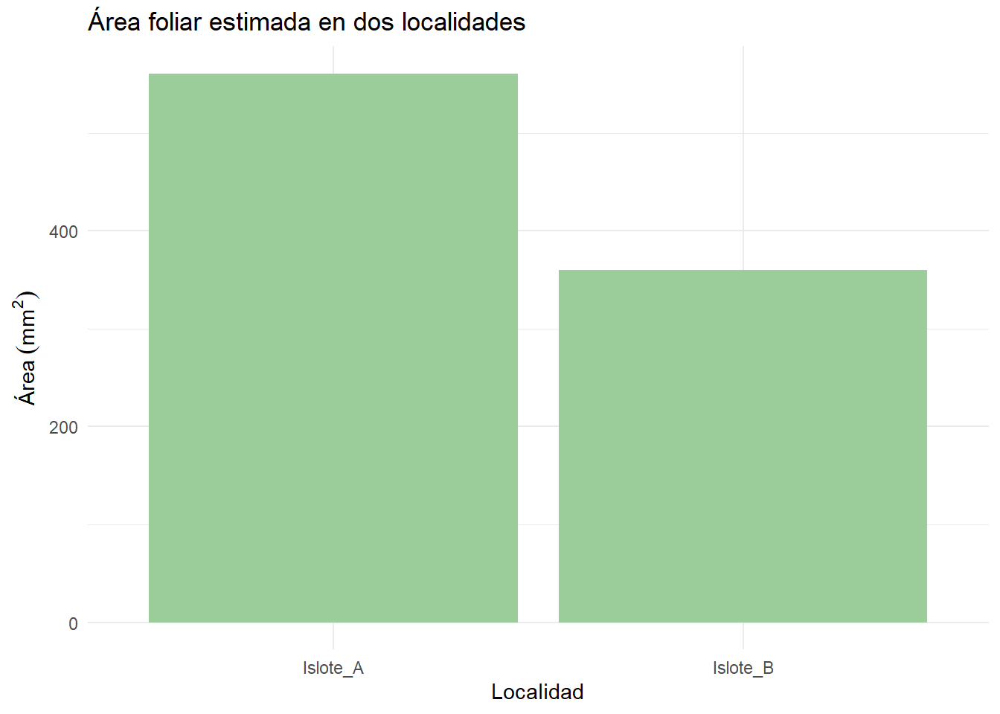

semillas_totales <- 50
semillas_germinadas <- 42
# 2. Calcular la tasa de germinación
tasa_germinacion <- (semillas_germinadas/semillas_totales)*100
tasa_germinacion[1] 84
Xavier Clemente García Cevallos
Capítulo 1
Para la instalación de R Core y RStudio seguirá el siguiente instructivo.

| Concepto | Descripción | Ejemplo biológico |
|---|---|---|
| Variable | Espacio que almacena información. | Altura de una planta, número de individuos. |
| Tipo de dato | Clase de información: numérica, carácter, lógica, factor. | 3.5, "Macho", TRUE. |
| Operador | Símbolos para operar o comparar valores. | +, -, ==, > |
| Estructura de control | Permite tomar decisiones o repetir acciones. | if, for, while. |
| Función | Bloque de código que realiza una tarea. | mean(), sd(), summary(). |
Un algoritmo es un conjunto ordenado de pasos lógicos para resolver un problema.
Puede traducirse en un bloque de instrucciones que transforman una entrada (input) en una salida (output).
Calcular la tasa de germinación de un grupo de semillas ¿Cómo lo haría usted?
\[ \text{Tasa de germinación} = \frac{\text{Semillas germinadas}}{\text{semillas totales}} \times 100 \]
Primero deberíamos recordar que si bien existen muchos índices en la germinación de semillas con el fin de entender comportamientos como dormancia y latencia, nosotros siempre partimos de una conclusión lógica. Más adelante podríamos revisar el paquete GerminaR.
semillas_totales <- 50
semillas_germinadas <- 42
# 2. Calcular la tasa de germinación
tasa_germinacion <- (semillas_germinadas/semillas_totales)*100
tasa_germinacion[1] 84Usted ya ha visto como desarrollar una ecuación de germinación. Proponga calcular la tasa de germinación para tres especies hipotéticas y discuta sus resultados con su compañero. En grupos
Un lenguaje de programación permite escribir los pasos del algoritmo de forma que el computador los entienda.
En biología, R y Python son los más usados…
R es ideal para análisis estadístico, escritura de documentos, visualización de datos y algunos análisis quimioinformáticos u ómicos.
Python es ampliamente usado en bioinformática, machine learning y manejo de grandes volúmenes de datos.
En R la sintaxis es en realidad muy sencilla.
# Si quisieramos calcular la media podríamos hacerlo así...
alturas <- c(12.5, 10.8, 14.2, 9.9)
mean(alturas)[1] 11.85# Podemos calcular su mediana, moda, desviación estándar, etc..
sd(alturas)[1] 1.901754# O podríamos calcular un resumen de estadística descriptiva.
summary(alturas) Min. 1st Qu. Median Mean 3rd Qu. Max.
9.90 10.57 11.65 11.85 12.93 14.20 Supongamos el siguiente ejemplo ahora…
Usted ha medido longitudes de la lámina de hojas del género Pterocaulon spp., y no sabe a que especies pertenece por tanto su nomenclatura sistemática fue escrita de esta forma y uno de los pasos para concluir que la especie es tal es la medida peciolar o laminar de la parte aérea de la planta. Para ello usted podría obtener una estadística descriptiva sencilla.
Suponga entonces lo siguiente…
longitudes_hoja<- c(3.4,2.8, 4.1, 3.9, 2.5)
mean(longitudes_hoja)[1] 3.34sd(longitudes_hoja)[1] 0.68775length(longitudes_hoja)[1] 5# O puede hacer un summary...
summary(longitudes_hoja) Min. 1st Qu. Median Mean 3rd Qu. Max.
2.50 2.80 3.40 3.34 3.90 4.10 Crear un vector con peso de hojas (gramos) y calcular su media y desviación estándar.
Una variable es un espacio de memoria donde se almacena un valor. El operador <- asigna ese valor a la variable.
altura <- 35 # Altura de una planta en (cm)
peso <- 2.4 # peso del fruto en gramos (g)
especie <- "Peperomia pellucida" # Epíteto específico. Podemos inspeccionar su contenido, por ejemplo…
print(altura)[1] 35class(especie)[1] "character"Y así podríamos probar con cualquier variable que creemos.
Defina tres variables: una con el número de individuos observados, otra con el hábitat según la clasificación que prefiera, y otra con una temperatura promedio.
Existen diferentes tipos de dato en R y en muchos otros lenguajes de programación como Python, PhP, Pearl, C++ o Java.
Númericos: Números reales o enteros.
Carácter: Texto entre comillas.
Lógico o booleano: Verdadero /Falso.
Factor: Categoría o niveles, es decir es categórico o tipo STRING.
En otras palabras, un ejemplo de esto podría ser:
edad<- 12 # Numérico
sexo <- "Macho" # Carácter
sobreviviente <- TRUE # Lógico
tratamiento<- factor(c("control", "Concentración baja", "Concentración media", "Concentración alta"))Cree un vector con tres tipo de datos y verificar con class()
Los operadores permiten realizar operaciones o comparar valores.
Suponga qué…
a <- 5+3 # Suma
b<- 10-4 # Resta
c<- 6*2 # Multiplicación
d<- 12/3 # División Comparan dos valores y devuelven TRUE o FALSE.
altura1<- 15
altura2<- 20
# Comparamos
altura1 > altura2 # Mayor que[1] FALSEaltura1 == altura2 # Igual que[1] FALSEaltura1 != altura2 # Diferente[1] TRUECombinan condiciones.
altura <- 18
peso <- 2.5
altura > 15 & peso > 2 # ambas verdaderas (AND)[1] TRUEaltura > 20 | peso > 2 # al menos una verdadera (OR)[1] TRUECrea dos variables numéricas y una condición que imprima "Alto rendimiento" si ambas superan un valor umbral, y "Bajo rendimiento" si no.
Permiten ejecutar partes del código de acuerdo con condiciones o repeticiones.
ifpH <- 6.8
if (pH < 7) {
print("Medio ácido")
} else if (pH == 7) {
print("Neutro")
} else {
print("Básico")
}[1] "Medio ácido"for# Imprimir número de muestra
for (i in 1:5) {
print(paste("Muestra", i))
}[1] "Muestra 1"
[1] "Muestra 2"
[1] "Muestra 3"
[1] "Muestra 4"
[1] "Muestra 5"whilecontador <- 1
while (contador <= 3) {
print(paste("Repetición", contador))
contador <- contador + 1
}[1] "Repetición 1"
[1] "Repetición 2"
[1] "Repetición 3"Usa un for para imprimir el número de individuo de 1 a 10.
Luego modifica el código para que solo imprima los números pares.
Una función es un bloque de código reutilizable que recibe entradas (argumentos), ejecuta una acción y devuelve un resultado.
Supongamos dos ejemplos, una más sencillo que otro.
Empezaremos por el ejemplo más simple en el cual calcularemos el promedio de crecimiento de una planta.
# Crecimiento promedio de una planta
promedio <- function(valores) {
resultado <- mean(valores)
return(resultado)
}
promedio(c(12.4, 14.1, 13.8))[1] 13.43333Ahora supongamos que queremos calcular el área de una hoja elíptica. Todos sabemos como es una hoja elíptica ¿verdad?

# Calcular el área de una hoja elíptica
area_hoja <- function(longitud, ancho) {
area <- pi * (longitud / 2) * (ancho / 2)
return(area)
}
area_hoja(12, 6)[1] 56.54867Cómo ejercicio final, ejecuta una función que calcule la tasa de supervivencia de individuos. Pruébela con valores distintos.
La fórmula proporcionada para esto es la siguiente.
\[ \text{Tasa de supervivencia} = \frac{\text{Individuos sobrevivientes}}{\text{Total de individuos}} \times 100 \]
Para este final, lo haremos juntos y debidamente introduciremos un préambulo al próximo capítulo II de este libro. Este ejercicio será retomado nuevamente en el capítulo III.

Linochilus tenuifolius fue descrita por José Cuatrecasas inicialmente bajo el nombre de Diplostephium tenuifolium en la revista Caldasia. Sin embargo en 2017 Vargas y colaboradores demostraron que este género en realidad es bifilético, consistiendo de dos clados, siendo Diplostephium y Parastrephia. En 2019 Patricio Saldivida y Vargas reajustaron en 59 nuevas combinaciones para el género Linochilus, debido a que tendría prioridad sobre otro género Piofontia, donde este último ahora lista como sinonimia para este género y sus especies.
Suponga que usted se encuentra en los Andes, hacia el norte de Colombia y ha identificado esta especie en diferentes puntos geográficos. Pero nota algo extraño, las hojas parecen tener un área foliar distinta, lo cual podría influir en su tamaño y posible grosor, además de la captación de energía lumínica por el cambio superficial laminar. Usted supone que todos los puntos georeferenciados son la misma especie, pero desea comprobar esto. Para ello usted probablemente tendrá en cuenta el sistema ecológico de islas, el cual permite estimar como condiciones climáticas específicas pueden generar variaciones en individuos o especies que en teoría serían lo mismo, ya que procesos alopátricos podrían estar generando estas presiones.
Para ello usted colecta 4 individuos que asume son el mismo taxón de 2 localidades. Procede a medir su área foliar (longitud y ancho). En este ejercicio obviaremos aspectos filogenéticos posibles dados por la biología molecular y otros aspectos taxonómicos de la especie o plasticidad fenotípica
Tendrá en cuanta lo siguiente…
\[ \text{Área de la hoja} = \pi \times \left(\frac{\text{longitud}}{2}\right) \times \left(\frac{\text{ancho}}{2}\right) \]
Aquí introducimos algunos conceptos que veremos en detalle en el siguiente capítulo.
En caso de no tener estas librerías deberás hacer install.packages() y escribir dentro del paréntesis dplyr y ggplot2.
# Instalaión de paquetes base
library(dplyr)
Attaching package: 'dplyr'The following objects are masked from 'package:stats':
filter, lagThe following objects are masked from 'package:base':
intersect, setdiff, setequal, unionlibrary(ggplot2)
# Datos de ejemplo: Longitud de hojas (mm) en dos localidades
hojas <- tibble(
localidad = c("Islote_A", "Islote_A", "Islote_B", "Islote_B"),
longitud_mm = c(28.5, 31.2, 22.8, 25.0)
)
# Aproximamos el ancho como el 40 % de la longitud
hojas <- hojas %>%
mutate(ancho_mm = longitud_mm * 0.4)
# Calculamos el área foliar asumiendo forma elíptica
hojas <- hojas %>%
mutate(area_mm2 = pi * (longitud_mm / 2) * (ancho_mm / 2))
# Mostramos la tabla con resultados
hojas# A tibble: 4 × 4
localidad longitud_mm ancho_mm area_mm2
<chr> <dbl> <dbl> <dbl>
1 Islote_A 28.5 11.4 255.
2 Islote_A 31.2 12.5 306.
3 Islote_B 22.8 9.12 163.
4 Islote_B 25 10 196.Resulta que ahora ya hemos obtenido nuestros resultados, pero necesitamos visualizarnos. Lo que verá ahora es un adelanto del capítulo III.
ggplot(hojas, aes(x = localidad, y = area_mm2)) +
geom_col(fill = "darkseagreen3") +
labs(
title = "Área foliar estimada en dos localidades",
x = "Localidad",
y = expression(Área~(mm^2))
) +
theme_minimal()
Ya hemos finalizado, entonces… ¿Cuál es nuestra conclusión?
Ahora deberá hacer los siguientes ejercicios.
Cambiar el valor de la proporción de ancho (por ejemplo 0.35 o 0.45) y observe cómo cambia el área estimada.
Agregue dos hojas más por localidad y repita el gráfico.
Explique brevemente si cree que las diferencias observadas podrían deberse al ambiente o a variación natural dentro de la especie.
Wickham, H. & Grolemund, G. R for Data Science (2nd ed.) — https://r4ds.hadley.nz
Data Carpentry: Introduction to R for Biologists — https://datacarpentry.org/R-ecology-lesson
Documentación oficial de R: https://cran.r-project.org/manuals.html